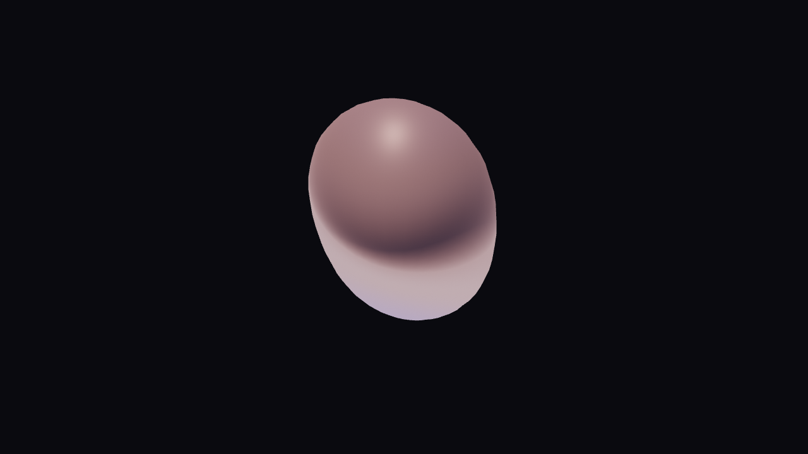

Creative · 19 October 2026 · 2 min read
Procedural 3D geometry and audio mesh deformation
Build procedural 3D meshes in Infinite DAW, deform topology with Field modifier kernels, and drive real-time geometric mutations.
By Naman Soni

on this page
in traditional 3d software, generating complex procedural geometry requires heavy dcc suites like blender or houdini. when you want to connect that geometry to low-latency audio analysis, midi clocks, or live synthesis, you are forced into fragile websocket bridges or osc pipelines.
infinite brings 3d geometry generation, vertex shading, and per-sample audio dsp onto the same unified execution graph. you can generate procedural vertex topologies, deform them with fast simd-vectorized field modifier kernels, and render them in real time at 60+ fps.
1. generating base procedural meshes
infinite includes native parametric mesh generators:
- mesh cube: generates subdivisions with uv coordinates and normal vectors.
- mesh sphere: uv sphere or icosphere with customizable geodesic resolution.
- mesh torus: toroidal coordinates with major and minor radii controls.
- mesh grid: high-density planar vertex grid ideal for terrain and landscape deformation.
each mesh node outputs a geometry buffer containing position (vec3 pos), normal (vec3 norm), texture coordinates (vec2 uv), and vertex color (vec4 color).
2. deforming vertex topology with field modifier
the field modifier node (Filter FieldModifier) accepts any input geometry and executes an inline field expression across every vertex in parallel.
unlike traditional vertex shaders which only run during the gpu rasterization pass, field modifier runs directly on the engine's geometry data structure, allowing the resulting deformed mesh to be used for physics collisions, camera raycasting, or further topological operations.
example: spherical ripple displacement driven by audio bass
// inputs: pos (vec3), norm (vec3), uv (vec2), t (float), bass (float)
let dist = length(pos)
let freq = 6.0
let wave = sin(dist * freq - t * 4.0) * (0.15 + 0.4 * bass)
let displaced_pos = pos + norm * wave
out.pos = displaced_pos
out.norm = normalize(norm + vec3(wave * 0.2, wave * 0.2, 0.0))
out.color = vec4(0.2 + 0.8 * bass, 0.4, 1.0 - wave, 1.0)in this single kernel:
length(pos)calculates the distance from the mesh origin.norm * wavedisplaces vertices along their surface normals.bassscales the displacement amplitude in direct synchronization with your music's low-frequency energy.out.colorgenerates dynamic vertex gradients without needing external texture maps.
3. connecting the audio-reactive graph
wiring this up in infinite takes under thirty seconds:
- drop an audio file or synth node into the canvas.
- wire its output to an audio analyze node.
- wire the
basspin of audio analyze to thebassinput of your field modifier. - feed the deformed mesh output into a render 3d node equipped with a camera, ambient occlusion, and directional light.
you now have a living, breathing 3d visualizer completely locked to your rhythm.
4. headless command-line rendering
because infinite features a complete headless engine, you do not even need to open the graphical user interface to render 3d animations. you can execute high-resolution 4k video renders straight from your shell or an automated script:
# render 10 seconds of 3d audio-reactive visuals to an mp4 file at 60 fps
infinite export-video --graph project.json --audio track.wav --out visual.mp4 --fps 60 --width 1920 --height 1080this makes infinite ideal for generative nft pipelines, music video automation, and automated social visual teasers.